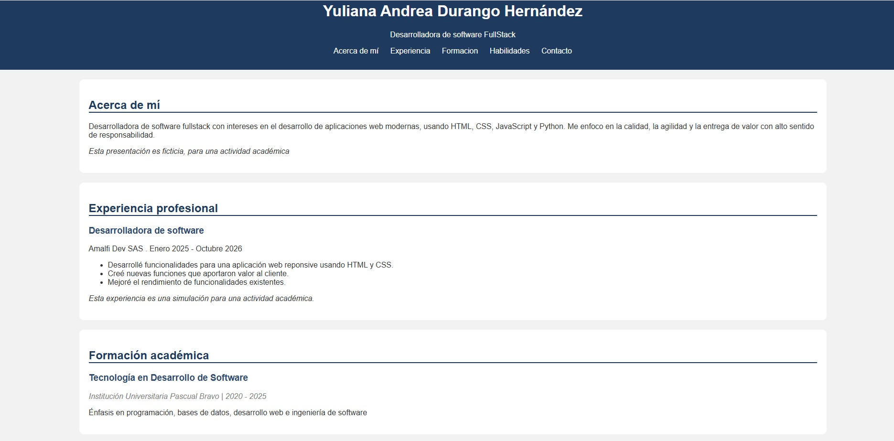
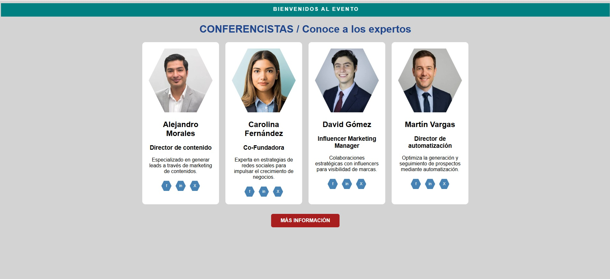
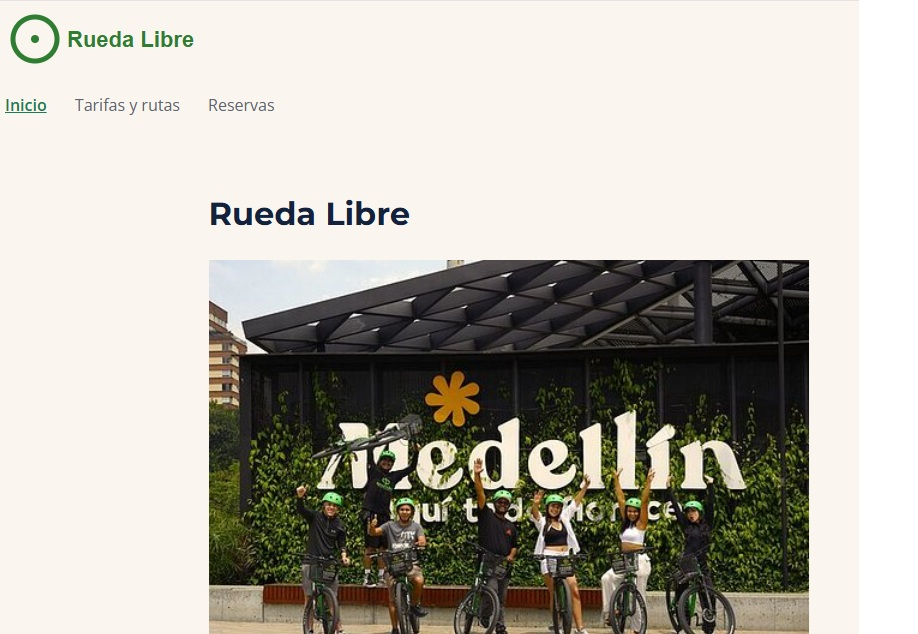
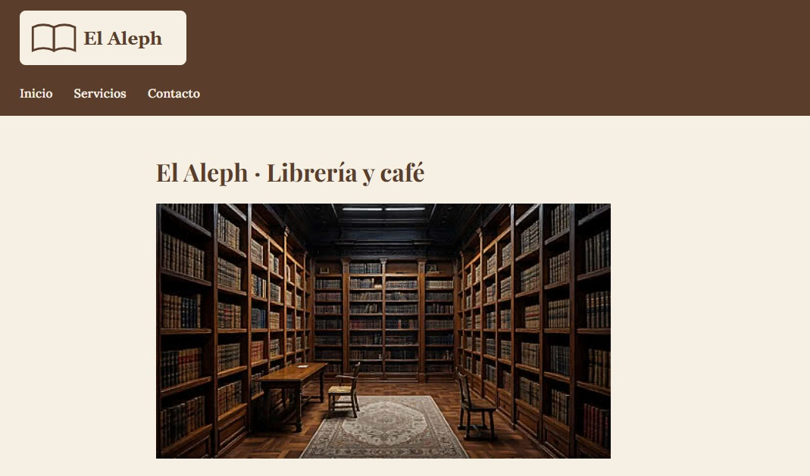

Hoja de vida
Página web donde presento mi perfil, experiencia, formación y habilidades como desarrolladora.
Practiqué la estructura de HTML con etiquetas semánticas y la aplicación de estilos CSS.
Ver en vivo

Sección de conferencistas
Página web que presenta a los conferencistas de un evento y sus áreas de interés.
Practiqué la organización del contenido en HTML y la presentación visual con CSS.
Ver en vivo

Rueda Libre
Sitio web de tres páginas para un emprendimiento de alquiler de bicicletas en Medellín.
Practiqué HTML semántico, tablas accesibles, un formulario de reservas con validación nativa
y una hoja de estilos con variables CSS, estados de navegación y el modelo de caja.
Ver en vivo

El Aleph · Librería y café
Sitio web para una librería clásica con café, inspirada en el cuento de Borges.
Practiqué la estructura semántica de un proyecto multipágina, un formulario de contacto accesible
y una hoja de estilos externa con variables, tipografías de Google Fonts y espaciado en rem.
Ver en vivo